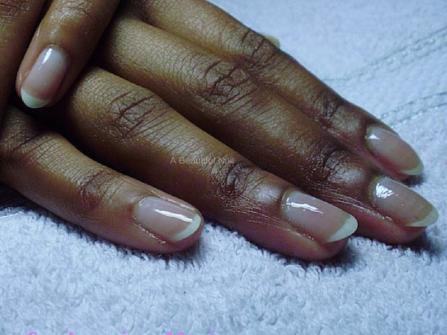
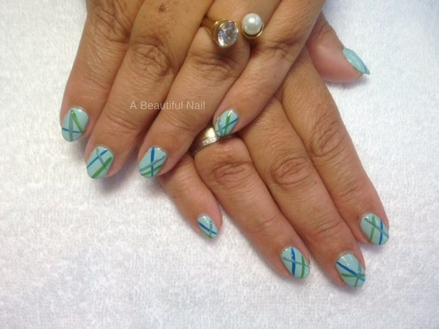
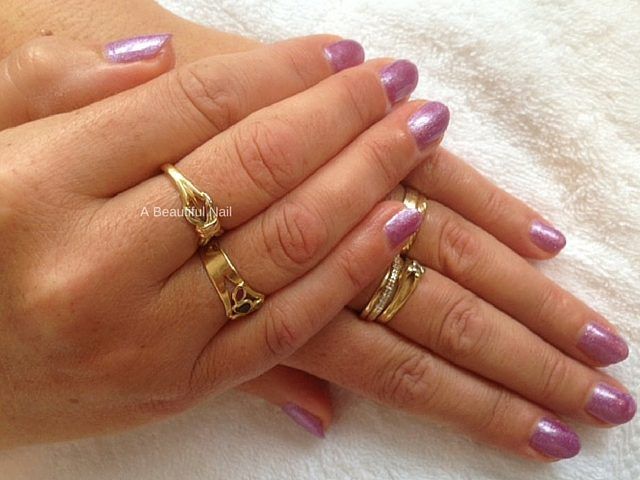

Behandelingen
Wat er precies gebeurt
als u op die stoel zit
Alle behandelingen worden op uw eigen nagel gedaan. Hieronder staat per behandeling wat eraan voorafgaat, wat u kunt kiezen en hoeveel tijd ervoor staat.
Een
Manicure
Een verzorging van de natuurlijke nagels en de nagelriemen. Er zijn drie varianten, die vooral verschillen in hoeveel aandacht de huid krijgt.
- Klassieke manicure
- Dertig tot vijfendertig minuten. Uw nagelriemen worden behandeld, daarna worden de nagels in de gewenste vorm gevijld en krijgen uw handen een voedende lotion. Die trekt in terwijl u koffie of thee krijgt. Daarna kiest u: polijsten, diamant blanke lak met topcoat, of twee lagen kleur met topcoat. € 30,50 of € 31,50 in kleur.
- Spa luxurieus manicure
- Vijfendertig tot veertig minuten. Hetzelfde, met daarbij een handbad met een lotion op basis van zuivere olie en crème. Dat badje maakt de nagelriemen soepel, en soepele nagelriemen scheuren en barsten minder snel. € 31,50 of € 32,50 in kleur.
- De MAN-icure
- Dertig minuten, voor de man die zijn handen en nagels wil laten verzorgen. Nagelriemen behandelen, vijlen, en daarna nagels en nagelriemen met een voedende olie. € 32,50.

Twee
ManiQ Gel
Een natuurlijk uitziende versteviging op uw eigen nagel, zonder verlenging. Ultradun in vergelijking met acryl, en flexibel genoeg om met uw nagel mee te buigen.
Het is bedoeld voor wie mooie verzorgde nagels wil maar geen kunstnagels, en voor wie de nagels steeds breken, scheuren of afbrokkelen voordat ze op lengte zijn. U kunt ze kort houden of laten groeien; dat maakt niet uit.
- Wat het doet
- Geen gescheurde of afbrekende nagels meer, en de nagel krijgt de kans om op lengte te komen. De lak houdt het er langer op uit. Minimaal drie weken houdbaar, daarna is nabehandeling mogelijk.
- Wat u kiest
- Blank of in kleur, per behandeling opnieuw te bepalen. Zijn uw nagels extreem dun, dan komt er een building base of rubber base onder voor twee euro extra.
- Wat het kost
- Versteviging blank € 35,00. Samen met een klassieke manicure € 48,00. Verwijderen is gratis als u meteen een nieuwe behandeling neemt, los kost het € 24,50.

Drie
Gellak
Versteviging in kleur of met een transparante glans, die tot drie weken mooi blijft zitten. De gellak die hier gebruikt wordt is op basis van honderd procent gel.
- Sterker dan lak
- Sterker dan gewone nagellak, dunner dan kunstnagels, en flexibel als een natuurlijke nagel. Uw nagels breken en scheuren minder snel.
- Niet schadelijk
- Bij goed gebruik beschadigt het uw nagel niet, mits het deskundig wordt verwijderd. Doe dat dus niet zelf.
- Ook voor één keer
- Geschikt om af en toe te laten zetten voor een feest, een vakantie of een trouwdag.
- Wat het kost
- Blank € 35,00, in kleur € 37,00. Samen met een klassieke manicure € 48,00 blank of € 50,50 in kleur. Verwijderen gratis bij een nieuwe behandeling, los € 24,50.

Gel, gellak of acryl van een andere nagelsalon laten verwijderen? Neem daarover eerst even contact op.
Weet u niet welke het moet worden?
Zet in de aanvraag kort neer hoe uw nagels nu zijn. Dan kan Marja dat meenemen als ze u terugbelt, en heeft u meteen het goede antwoord.